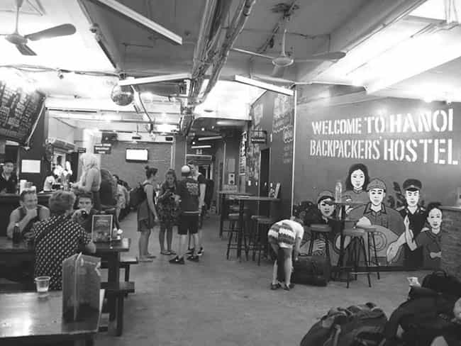

Daryush "Roosh" Valizadeh created ROK in October 2012. You can visit his blog at RooshV.com or follow him on Twitter and Facebook.


Ten years ago, I was staying at a hostel in Buenos Aires. I was nearly five months into what would be a six month backpacking trip through South America. Things were not going so well. Repeated illnesses revealed that my constitution was too fragile for the continent. I began longing for the home I eagerly left behind, or at least somewhere more comfortable, but my ego pushed me to continue. I didn’t want to appear like a quitter, and I still needed material for the book I planned on writing about the experience. Then for the first time I heard the 1992 song “Runaway Train” by the band Soul Asylum.
It seems no one can help me now
I’m in too deep
There’s no way out
This time I have really lead myself astray
Runaway train never going back
Wrong way on a one-way track
Seems like I should be getting somewhere
Somehow I’m neither here nor there
I immediately identified with the song. There I was, healing on a dorm room bed in Argentina from yet another stomach bug after quitting my job and selling most of my possessions to travel to the third world and hang out with hippie backpackers who wouldn’t stop telling me that poor people are “so happy.” But I didn’t want to go back to my career. I was developing a taste for a new kind of freedom, and there was no way I could deal with middle managers and pointless meetings again. I had to carve a new path.

Fast forward ten years. The stomach parasites and bed bugs were a distant memory. The pub crawls and ten-hour bus rides through winding mountain roads were no more. I’ve since sold tens of thousands of books and achieved a modest level of comfort. My apartment is small but located in the middle of the city. It’s stocked with all the comforts I need, including a bread machine and panini maker. I’m not aching for more women, fun, or adventure like before, and I even experience fleeting moments of bliss when the feeling of the rain and the sound of the wind strike me in a certain way. Yet in spite of this, I still feel that there is a missing ingredient, a nagging emptiness I cannot fill.
I loaded a music playlist on YouTube, hit the shuffle button, and began cooking dinner. Midway through, Runaway Train came on. Instantly, images of South America rushed through my mind, both the highs and the lows. I smiled and reminisced. How long ago those times were, as if they happened in another life.
Can you help me remember how to smile?
Make it somehow all seem worthwhile
How on earth did I get so jaded?
Life’s mysteries seem so faded
I can go where no one else can go
I know what no one else knows
Here I am, just drowning in the rain
With a ticket for a runaway train
Once these lyrics set in, I stopped stirring my chicken dish and turned my head towards the music. My throat tightened. It’s true that I fantasize of leaving my city every day, but to where? I don’t know if I have the energy to start over again. And every day I think of finding a good woman, but how? I’m too burned out and broken, and if I could make it to nearly thirty-nine years of age without a face that I could love, chances are I could make it another thirty-nine years.
I know that as comfortable as my apartment is, and as much I enjoy eating the food that comes from my bread machine and panini maker, they are not enough to make me stay. The three friends I have in town will one day move on. Ten years have passed me by and I’m as rootless as I was in Buenos Aires. I’m still on the hostel bed, trying to improve my situation and become whole, but that outcome becomes ever more distant. I’ve stayed away for so long that I no longer even have a home to return to.
Did I really expect my essential nature to become something totally different? Did I believe that a change of scenery could affect my internal state of mind? My energy is lower today, and I am calmer, but the ache remains. The dissatisfaction that was born when I was born simmers underneath the surface, brought out by song. It has never left me, and I don’t think it ever will, no matter where I go and what I do, because whatever train I take, my self will always travel with myself. Maybe one day I can look out the window and just enjoy the ride.
Read Next: The Past Is An Anchor